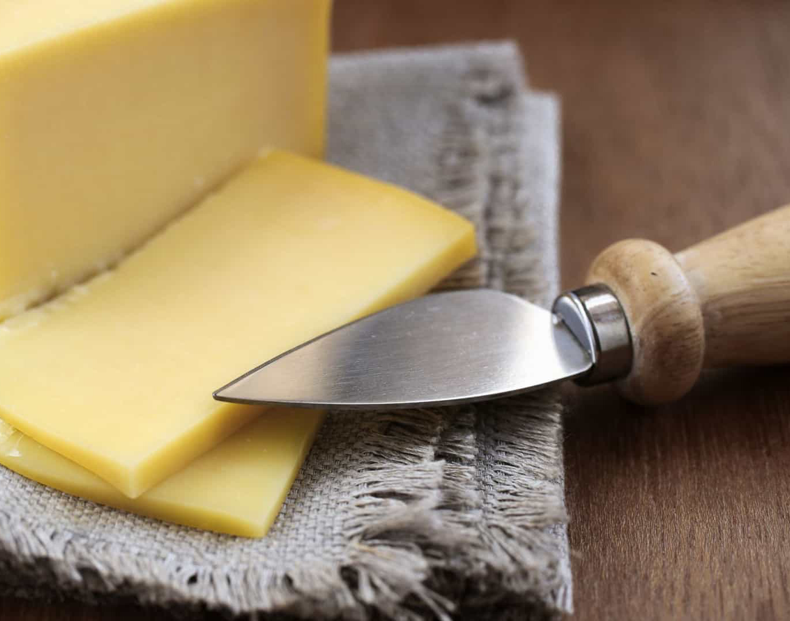

Sobre a Catolé
A loja Catolé | Produtos do Agreste traz para o mercado o que há de melhor na produção de queijos, mel e própolis. Fundada em 2020, a Catolé | Produtos do Agreste já é destaque na cidade e conquista novos clientes a cada dia.
Nossa missão é: "Levar produtos saborosos e de qualidade para nossos clientes".
Oferecemos entrega imediata ou agendada, o melhor para se adaptar ao horário do cliente. O atendimento possui padrão de excelência e agilidade, garantindo qualidade e satisfação dos nossos clientes.
Nosso estabelecimento
Nosso estabelecimento está localizado no coração da cidade.
Benefícios
- Atendimento aos clientes
- Entrega veloz
- Produtos de qualidade
- Produção artesanal
- Pontualidade
- E muito mais!